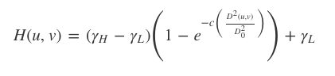
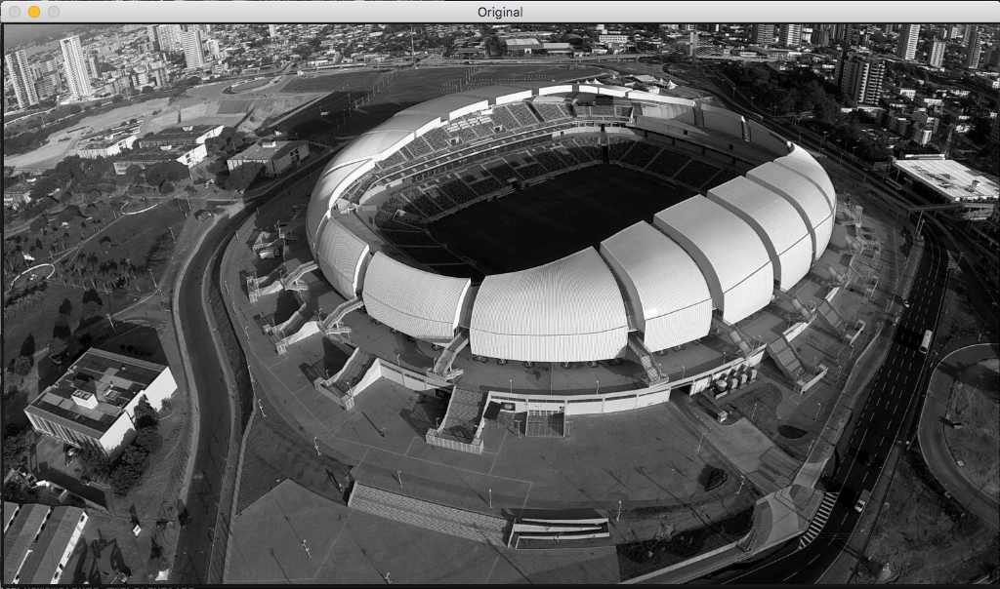
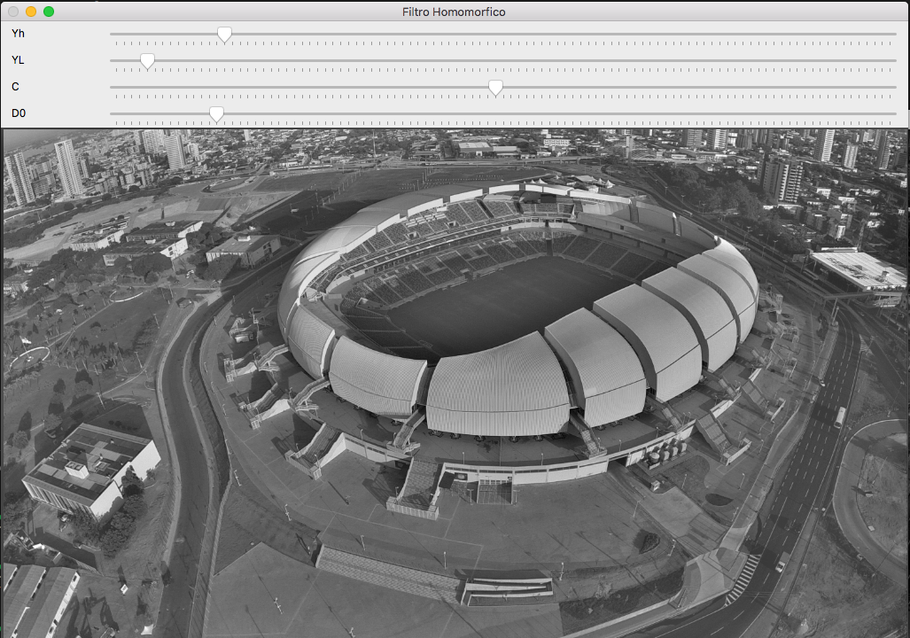

Exercise 1. Homomorphic filter
This example implements an homomorphic filter based on the dft.cpp algorithm and answers to the proposed exercises at agostinhobritojr.github.io.
The Homomorphic filter is based on the following function:

What does this program do?
The program allows 4 different adjustments in the image
- Regulate the low frequency component γLγL (referring to illumination);
- Regulate the high frequency component γHγH (referring to reflectance);
- Regulate the variable C, which controls the slope of the function as it transitions between γLγL and γHγH.
- Adjust the variable D0D0;
Original image 
Filtered image 
#include <iostream>
#include <opencv2/opencv.hpp>
#include <cmath>
using namespace cv;
using namespace std;
Mat image, imageDft, padded;
char *filename;
float MAX = 100.0;
//-----------------VARIAVEIS DO FILTRO---------------------
float yl = 0, yh = 0, d0 = 0, c = 0;
float ylmax = 100, yhmax = 100, d0max = 256, cmax = 100;
int yl_slider = 0, yh_slider = 0, d0_slider = 0, c_slider = 0;
//---------------------------------------------------------
//valores ideais dos tamanhos da imagem para calculo da DFT
int dft_M, dft_N;
//---------------------------------------------------------
char TrackbarName[50];
void deslocaDFT(Mat& image ){
Mat tmp, A, B, C, D;
// se a imagem tiver tamanho impar, recorta a regiao para
// evitar cÃģpias de tamanho desigual
image = image(Rect(0, 0, image.cols & -2, image.rows & -2));
int cx = image.cols/2;
int cy = image.rows/2;
// reorganize quadrants
// A B -> D C
// C D B A
A = image(Rect(0, 0, cx, cy));
B = image(Rect(cx, 0, cx, cy));
C = image(Rect(0, cy, cx, cy));
D = image(Rect(cx, cy, cx, cy));
// A <-> D
A.copyTo(tmp); D.copyTo(A); tmp.copyTo(D);
// C <-> B
C.copyTo(tmp); B.copyTo(C); tmp.copyTo(B);
}
void filtroHM(){
Mat filter = Mat(padded.size(), CV_32FC2, Scalar(0));
Mat tmp = Mat(dft_M, dft_N, CV_32F);
for (int i = 0; i < dft_M; i++) {
for (int j = 0; j < dft_N; j++) {
float d2 = pow(i - dft_M/2.0, 2) + pow(j - dft_N/2.0, 2);
float exp = - c*(d2/pow(d0, 2));
float filtroH = (yh - yl)*(1 - expf(exp) ) + yl;
tmp.at<float> (i,j) = filtroH;
}
}
Mat comps[] = {tmp, tmp};
merge(comps, 2, filter);
Mat dftClone = imageDft.clone();
mulSpectrums(dftClone,filter,dftClone,0);
deslocaDFT(dftClone);
idft(dftClone, dftClone);
vector<Mat> planos;
split (dftClone, planos);
normalize(planos[0], planos[0], 0, 1, CV_MINMAX);
imshow("Filtro Homomorfico", planos[0]);
imshow("Original", image);
}
void on_trackbar_yl(int, void*){
yl = (float) yl_slider;
yl = ylmax*yl/MAX;
filtroHM();
}
void on_trackbar_d0(int, void*){
d0 = d0_slider*d0max/MAX;
filtroHM();
}
void on_trackbar_yh(int, void*) {
yh = yh_slider*yhmax/MAX;
filtroHM();
}
void on_trackbar_c(int, void*) {
c = c_slider*cmax / MAX;
filtroHM();
}
int main(int argvc , char** argv){
//open image
if (argvc != 2) {
cerr << "Usage: " << argv[0] << " <img_path>" << endl;
return 1;
}
filename = argv[1];
image = imread(filename);
cvtColor(image, image, CV_BGR2GRAY);
// Identify the optimum size for
// Calculating FFT
dft_M = getOptimalDFTSize(image.rows);
dft_N = getOptimalDFTSize(image.cols);
// Image padding
Mat_<float> zeros;
copyMakeBorder(image, padded, 0,
dft_M - image.rows, 0,
dft_N - image.cols,
BORDER_CONSTANT, Scalar::all(0));
// Zero padding - complex part of the matrix
zeros = Mat_<float>::zeros(padded.size());
// prepare the complex part
imageDft = Mat(padded.size(), CV_32FC2, Scalar(0));
copyMakeBorder(image, padded, 0,
dft_M - image.rows, 0,
dft_N - image.cols,
BORDER_CONSTANT, Scalar::all(0));
Mat_<float> realInput = Mat_<float>(padded);
// insere the two components within the matrices arrays
vector<Mat> planos;
planos.push_back(realInput);
planos.push_back(zeros);
// combine matrices array into a single
// complex component
merge(planos, imageDft);
// calcula o dft
dft(imageDft, imageDft);
deslocaDFT(imageDft);
namedWindow("Homomorfic filter", WINDOW_NORMAL);
sprintf( TrackbarName, "Yh");
createTrackbar( TrackbarName, "Filtro Homomorfico",
&yh_slider,
MAX,
on_trackbar_yh);
sprintf( TrackbarName, "YL");
createTrackbar( TrackbarName, "Filtro Homomorfico",
&yl_slider,
MAX,
on_trackbar_yl);
sprintf( TrackbarName, "D0");
createTrackbar( TrackbarName, "Filtro Homomorfico",
&d0_slider,
MAX,
on_trackbar_d0 );
sprintf(TrackbarName, "C");
createTrackbar( TrackbarName, "Filtro Homomorfico",
&c_slider,
MAX,
on_trackbar_c);
filtroHM();
waitKey(0);
return 0;
}
git